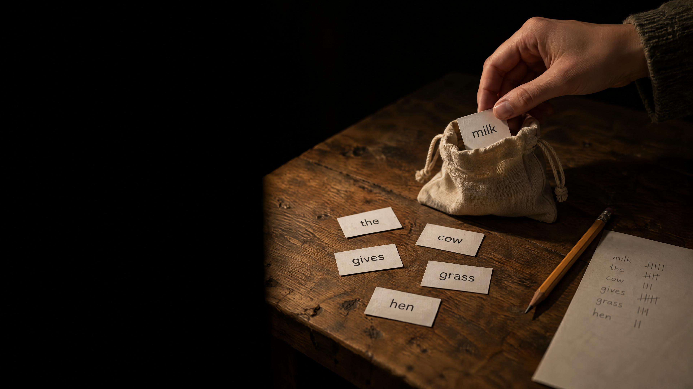

how far do you get
with nothing but
counting which word
follows which?
image: ai-generated (gpt-image-2.5-flare)
the question behind every language model
a token is a word or a piece of a word; in our corpus every token is a whole word
what comes next?
the naive idea: count what followed
the corpus: 22 sentences about a farm
every sentence becomes tokens
how large is the corpus?
our corpus
GPT-3
training data
104
words
300,000,000,000
tokens, about 300 billion
vocabulary
33
different words
50,257
different tokens
brown et al. (2020):
language models are few-shot learners
; the vocabulary is that of
GPT-2
no context: only how often
one word of context
the word cards are the model
key idea
a bag of cards is a
probability distribution
you can hold in your hand.
writing is drawing, one word at a time
what the bags write
temperature
temperature 0 goes round in circles
a penalty for repeating
simplified: real models lower the score of every token in the recent text; in
LM Studio
the setting is called repeat penalty, and 1 switches it off
two words of context
more context, more copying
key idea
more context makes the model more certain and more correct, and at the same time it
copies more
of its training data.
fluent and false
zero means never counted
the table is almost empty
the same question, a different answer
P(
next
|
context
)
LLMs
compute it, too,
but in a completely
different way.
image: ai-generated (gpt-image-2.5-flare)